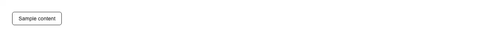

Inline two-step confirmation on the button itself: the first click arms it — the label swaps to "Confirm?" and the button turns destructive — and only the second click calls onConfirm. It disarms itself after a timeout (3s by default) and on blur, so a stray double-click, a scroll away, or a Tab out can never fire the action. Reach for it wherever a modal would outweigh the action: a delete or remove button in a table row, a card, a list item or a toolbar; removing a member or collaborator; revoking an API key, token or session; disconnecting an integration; clearing a cache or a log; unsubscribing; resetting a filter or a setting; discarding a draft; leaving a channel. Common asks it answers: "confirm before delete without a dialog", "two-step delete button react", "click twice to confirm", "are you sure button shadcn", "inline confirmation button", "destructive button with confirmation", "delete button in a table row", "undo-less delete confirmation". Props: `onConfirm` (fired only on the confirming click), `confirmText` for the armed label, `timeout` in milliseconds, plus everything else a `<button>` takes. It is one real `<button>` element — Enter and Space confirm it, `disabled` is honoured, your `className` is merged through `cn`, and it defaults to `type="button"` so an armed click inside a form cannot submit it by accident. The armed state is exposed as `data-armed` for styling and announced through a polite live region, so the change is never carried by colour and label alone. Theme-aware through the destructive tokens, no dependencies, and `"use client"` because it holds a state and a timer. What official shadcn/ui offers instead is alert-dialog: a modal that pulls in @radix-ui/react-alert-dialog, renders through a portal, traps focus and needs open state wired up — right for a page-level, consequential confirmation, heavy for a row-level one. Official button has a destructive variant but no confirmation behaviour at all. For an action severe enough that a second click is not enough — deleting a production project or an account — use type-to-confirm, which makes the user type the name first.

Rendered on the shadcn default neutral palette with harness-generated props.
pnpm dlx shadcn@4.21.0 add @pulld/confirm-button
| licence | POINTER |
|---|---|
| primitive base | none |
| type | registry:ui |
| files | src/components/ui/confirm-button.tsx |
| npm deps pulled | none beyond the pre-installed peer set |
| registry deps | — |
| semantic / palette / hex | 9 / 0 / 0 |
| writes shared ui/ | yes — can overwrite the project’s own primitives |